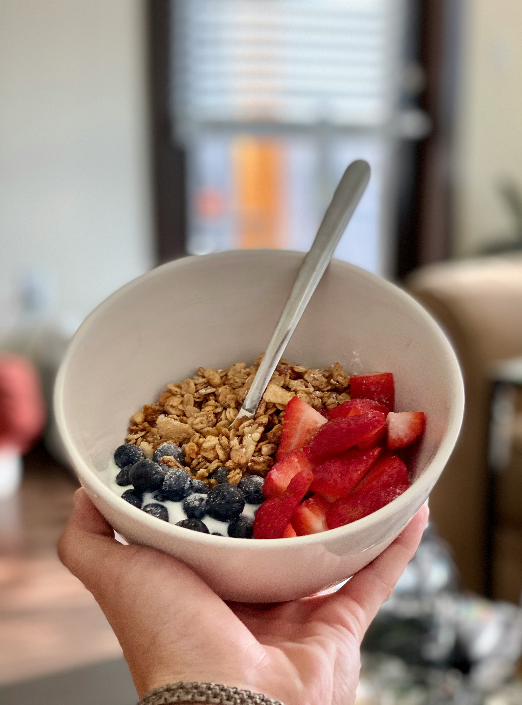
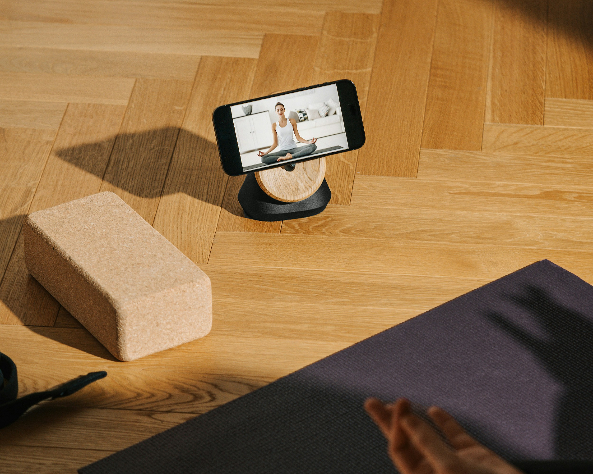

O Despertar Alquímico: Sua Jornada para um Amanhecer de Pura Positividade
Em cada amanhecer, reside a promessa de um novo começo. Mas, quantas vezes nos permitimos verdadeiramente **acordar** para essa oportunidade, cultivando uma **conexão profunda** com nosso ser e o universo ao redor? Como um **Personal Holistic**, meu propósito é guiá-lo nessa jornada de **despertar alquímico**, transformando o ordinário em extraordinário, a rotina em ritual sagrado.
O Poder da Consciência no Primeiro Raio de Sol
A vida é feita de energia, consciência e memória. E nada é fixo, tudo pode ser reescrito – por você. A chave para um dia perfeito reside nos primeiros momentos após o **despertar**. É nesse instante que temos a oportunidade de **profetizar** e **vibrar atomicamente** a positividade. Imagine cada célula do seu corpo ressoando com a intenção de um dia leve, produtivo e feliz. Não é apenas pensamento positivo; é uma **conscientização** ativa do poder que você detém sobre sua própria realidade.
Comece com a **respiração consciente**. Antes mesmo de sair da cama, sinta o ar preenchendo seus pulmões, trazendo vida nova, e expire tudo o que não serve mais. Essa simples **conexão** com o presente é o primeiro passo para alinhar sua mente e emoções, preparando o terreno para um dia repleto de propósito e bem-estar.
Pilares para uma Vida Vibrante: Corpo, Mente e Espírito
Seus **cuidados pessoais** vão além da superfície. A jornada holística abraça o ser integral. Comece o dia nutrindo seu templo: uma **boa alimentação** é o combustível para sua energia e clareza mental. Opte por alimentos vivos, que vibram alto e energizam seu corpo para as tarefas do dia.
A integração de práticas como yoga, meditação ou um simples alongamento matinal potencializa essa vibração. São momentos de auto-observação, de escuta interna, que reforçam sua **conexão profunda** com sua verdadeira essência. Lembre-se, o objetivo é harmonizar corpo, mente e emoções para que você possa fluir com a vida, não lutar contra ela.
A Alquimia da Positividade e a Tecnologia Consciente
Vibrar positividade não significa ignorar desafios, mas enfrentá-los com uma mentalidade de crescimento. É a **alquimia** de transformar o chumbo em ouro, as dificuldades em oportunidades. Como estudante de Engenharia de Software, vejo a tecnologia não como distração, mas como ferramenta para potencializar essa jornada.
Aplicativos de meditação, diários digitais para gratidão ou ferramentas de organização podem ser aliados poderosos para manter sua vibração elevada e sua **rotina produtiva**. A **conscientização** é a chave para usar a tecnologia a seu favor, e não o contrário.
Que este artigo seja um convite ao seu próprio **despertar**. Comece hoje a **profetizar** um futuro de mais saúde, bem-estar e alegria. Cada manhã é uma nova tela em branco, pronta para ser pintada com as cores vibrantes da sua **positividade**. Permita-se vibrar atomicamente com a vida!